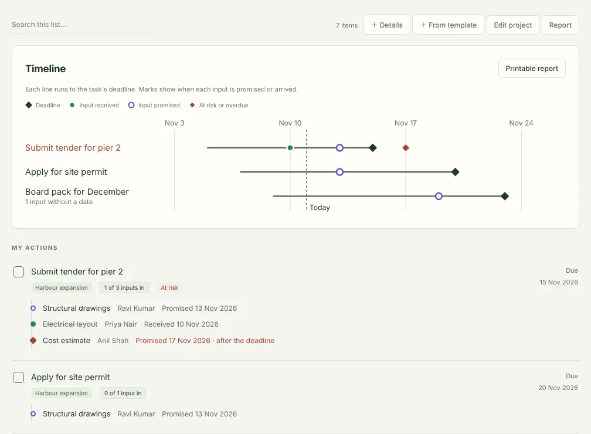

Every input, against the task it feeds
Ask several people for inputs to one task, and link the work that has to come first. Each request keeps its own person, promised date, chase date and history. The task shows as waiting until every input is in.
The whole project at a glance
Each project has a timeline: every task runs to its deadline, with a mark for each input when it is promised or arrives. A printable report lists every deliverable, what it is waiting on, why it is at risk and who owes what. Save it as PDF from the print window and send it on.

What it tells you
- What's blocking this? Each task lists the inputs it's still waiting on and who owes them.
- At risk. A task is flagged when an input is promised after its deadline, is overdue, or has no date agreed close to the deadline.
- What it unblocks. When an input arrives, you see which tasks can now move.
- Partly received, or received but not yet checked. Half a delivery doesn't close a request.
- The right person. Two people with the same name stay separate; each person can carry an organisation.
- Each person's promise record. How often they deliver by the date they give, and how late the rest usually are. For someone who is usually late, DueThread sets the first chase a few days before the date they give.
- One chase message per person. Everything they owe you, across all projects, in one message ready to paste into email or chat. Record the chase on all of them with one click.
- Templates for work you repeat. Save a task with its usual inputs, such as a tender or a month-end pack. Next time, create the task and every request in one step, with dates counted back from the new deadline.
Free and Pro
Free
For everyday tasks and follow-ups.
- Unlimited tasks, follow-ups, projects and reminders
- Promised dates kept separate from chase dates
- People: what each person owes you, with rename and merge
- Review with 8-week charts of what's overdue, chased and closed
- Workflow tracking on 3 open tasks at a time
Pro
US$29 a year
- Everything in Free
- Workflow tracking on every task
- Each person's promise record
- One chase message per person
- Workflow templates
- Project timelines and printable reports
- New Pro features as they arrive
Try it first. Every install includes 14 days of Pro, starting the first time DueThread opens. No card or account is needed, and nothing you set up during the trial is deleted when it ends.
One payment for a year. No subscription and no automatic renewal. Renewing early adds a year to your current end date, so no days are lost. Prices are in US dollars; checkout may show your local currency and any tax due.
How buying works
- Install DueThread from the Chrome Web Store, if you haven't already. The trial and the newest Pro features need version 3.1 or later; Chrome updates it automatically.
- Click Buy DueThread Pro. Payment is handled by Dodo Payments, our payment provider and merchant of record.
- After paying, you come back to a page with your licence key, and the key is emailed to you as well. Keep that email.
- In DueThread, open Settings, choose Enter licence key and paste it.
DueThread checks the key on your computer, without connecting to anything. There is still no account, and your tasks never leave your computer.
What happens when a year ends
Nothing you created is locked or deleted. You can still see and edit every task, request and person, and tasks already being tracked keep working. Tracking new tasks goes back to the free limit of 3 at a time; promise records, chase messages, templates, timelines and reports are hidden until you renew, and your saved templates come back when you do. The same applies when the trial ends.
Questions
See Pro on the support page, or write to support@sensifty.com.